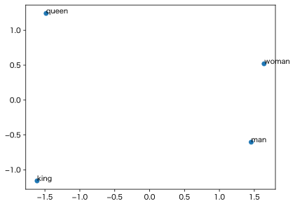

word2vec は単語を意味空間のベクトルに変換するGoogleの古典的なアルゴリズムである。この空間では king - man + woman ≒ queen が成り立つなどと言われている。これを検証してみよう。
まずは上記のページから学習済みのモデル GoogleNews-vectors-negative300.bin.gz をいただいてくる。
Pythonで扱うには gensim というパッケージを使う。これは今のところPython 3.12までしか対応していないようだ。pipでインストールしておく。
from gensim.models import KeyedVectors
model = KeyedVectors.load_word2vec_format("GoogleNews-vectors-negative300.bin.gz", binary=True)
query = model.most_similar(
positive=["king", "woman"],
negative=["man"],
topn=10
)
query
これで king + woman - man にコサイン類似度の近い10個の単語・フレーズがリストされる：
[('queen', 0.7118192911148071),
('monarch', 0.6189674735069275),
('princess', 0.5902431011199951),
('crown_prince', 0.5499460697174072),
('prince', 0.5377321243286133),
('kings', 0.5236844420433044),
('Queen_Consort', 0.5235945582389832),
('queens', 0.5181134343147278),
('sultan', 0.5098593235015869),
('monarchy', 0.5087411403656006)]
これを見ると、確かに queen が一番近いようだ。でもこれには罠がある。model.most_similar を使わずにやってみよう：
import numpy as np WORDS = ["man", "woman", "king", "queen"] vectors = [model[w] for w in WORDS] X = np.vstack(vectors) model.cosine_similarities(X[2] + X[1] - X[0], X)
array([0.12160636, 0.3916339 , 0.84493923, 0.73005164], dtype=float32)
つまり king + woman - man とそれぞれの単語との類似度は、king が一番高く（0.84）、queen は次点（0.73）である。
どうやら model.most_similar は与えられた単語以外しか調べないようだ。そのため、queen が一番近いように見えるが、実は king のほうが近い（king - woman + man ≒ king）。
ついでに主成分分析（PCA）で2次元に落としてプロットしてみる：
from sklearn.decomposition import PCA
import matplotlib.pyplot as plt
pca = PCA(n_components=2, random_state=42)
X2 = pca.fit_transform(X)
plt.scatter(X2[:, 0], X2[:, 1])
for (x, y), label in zip(X2, WORDS):
plt.text(x, y, label)
plt.axis("scaled")

king + woman - man は queen まで届かず、king のほうに近いことが、この図からも伺える。